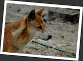
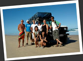
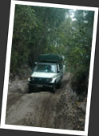
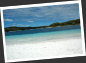
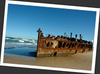
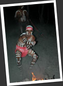
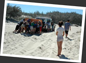
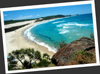
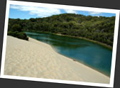

第八章
來到 Hervey Bay
再出發前往下一站 Hervey Bay，巴士要在夜欄人靜時才到達目的地．望著窗外空盪盪的街道，車廂內的我忽然對黑暗產生莫名的恐懼......從前的我，總以為一個人四處闖蕩很風流，很浪漫．其實這只是一個人流浪的光明面，一個人流浪還得面對不時襲來的各樣情感，孤獨，無助，思念......不停的往前走，有種今天不知明天事的感覺．這時的我，正是飢腸轆轆．只想一直坐在車上，讓車廂變成我的家．只想抱著鐵皮車廂帶給我的安全感，有時我覺得自己變得很軟弱．拿出錢包內的照片，看著相中人，恨不得立時跑回香港去見他們......
為了安全，我早就訂好了 hostel，讓自己不用摸黑找旅館．我聽 Kevin 早前給我的提議，訂了一家叫做 Fraser Escape 的 hostel，這家 hostel 還會幫住客組隊，然後租出四軀車給小隊到 Fraser Island 作刺激的自駕車越野獵奇之旅．他們派人在巴士站迎接我，來到 hostel，驚覺這兒的格局和一般的 hostel 完全不同．這兒其實是個大草地，裏面起有一間間臨時屋．我的多人間就是其中一個獨立單位，連同廚房在內，還有電視機，住在裏面很有家的感覺．入住的人看來不多，和我同房的只有德國老伯 Marco．Marco 來自慕尼克，是一名建築師，很喜歡旅遊．他說自己很夠運，能夠存了一些錢，到了這年紀可以自給自足，不再工作了，身體依然很好，於是就到世界各地旅行．Marco 臉上總掛著笑臉，更有著老人家的持重，說話充滿人生智慧，而且生活也非常健康．到 Fraser Isalnd 的組合中，他將會是我的隊友吧！
話說回來，這家 Fraser Escape 算是間有道德的 hostel．本來我們打算在來到 Hervey Bay 的第三天出發到 Fraser Island，但整個 hostel 只有五個人，湊不夠人數，而且還只有我和 Marco 懂開車．Hostel 的負責人說："人數不夠，我不會冒險送你們到島上！" 事實上，Fraser Island 生態原始，島上連柏油路都沒有，只有四驅車才能應付．對開四驅車毫無經驗，而且又不熟悉島上地形的人來說，在島上亂闖的確有危險性．因此負責人不讓我們上島是合情合理的，我們決定多等一天，負責人還免了我們當晚的房租，令人心服口服．
芬瑟島 Fraser Island 的越野車獵奇
位於 Hervey Bay 對開的 Fraser Island 是被列為世界遺產，全世界最大的一個沙島．百萬年來由澳洲大陸流走的細沙，一點一滴的積聚起來，最終成為世界最大的沙島．整個島加起來的含沙量，比起整個撒哈拉沙漠的沙還要多！但不要以為這個沙島就像沙漠一樣貧瘠，情況剛好相反，這兒長有非常良好的雨林，擁有原始的生態．一顆顆細沙本來就是最佳的天然過濾，島上的淡水資源十分豐富，水質清澈得令人難以置信！島上長滿了參天巨樹！據說，本來島上只有一些小植物，它們能夠從風中捕取養份，這些植物在自然的循環下變成了其它植物的養份，經過長時間的演化，養份一點一滴的積聚起來，從而養育了今天的巨樹林．當我真正看過這些巨樹，回想起這一切的來源，就會覺得大自然很神奇．
而且，Fraser Island 還是一睹澳洲野犬 Dingo 的好去處．Dingo 犬在幾萬年前由土著帶到澳洲大陸之上，漸漸成為澳洲的一種本土動物．牠們是世界上最原始的犬品種．與其說是犬，不如說成狼比較貼切，Dingo 並不會和其他犬一樣的吠叫，行為舉動都很接近狼．Fraser Island 便曾經有不少 Dingo 襲擊人類的報道，牠們可不是一般的乖乖犬呢！我們出發到 Fraser Island 之前，Fraser Escape 的負責人便一臉凝重的向我們灌輸處理 Dingo 襲擊的相關知識．除此之外，我們也學了一些操控四軀車的技巧．我們也獲發一張建議路線，減低我們"誤入岐途"的機會．注重安全，是在澳洲旅遊的好處．
我們終於組成隊伍出發！隊員包括我，Marco，韓國女孩朴允香，日本女孩由香，加拿大妹 Stephy，還有瑞典四人組 Anders, Marcus, Erik 和 Elin．當中我和瑞典四人組特別談得來，其中 Anders 和我同樣是攝影友，我和他交情最好．Anders 和 Marcus 在瑞典當機場後勤的工作，對機場運作很是熟悉．他們工作了數年，儲起來的錢一把拿來環遊世界．Anders 對我說他對昆士蘭的一派玩樂氣氛感到有點失望："We come to experience, we don't come to party!" 這句說話也說出了我遊走昆士蘭時的心聲．他們四個都十分隨和友善大方，Anders 跟我說："我們瑞典是個很和平的國家，我們在近代史上從來沒有和別國戰爭過！" 的確，我在澳洲遇過幾個瑞典人，他們的性格都和四人一樣的友善，因此我對瑞典人的印象很好．四人很樂意教我瑞典文，但是我天份不好，只學懂了一句粗口．我跟 Anders 一起研究澳洲人奇怪的打招呼方式，每逢看見澳洲人，便學著他們打招呼：說一句 "How's goin' mate?" 然後就不顧而去．為甚麼澳洲人要向人問好，但又沒有想過要聽對方回答呢？這點我們都不明白．
我們將要自行準備在島上三日兩夜的糧食，幾位女孩子自動請纓擔當了這個責任，無聊的我跟了去幫忙．其實要準備九個人每天三餐的糧食，真的不是件容易事哦！但這件事給很有主見性格硬朗的 Stephy 一一搞定了，往後幾天我們都要捧著肚子走路！跟著 Stephy 購一次物，我心裏面暗叫："原來外國的食物，是要這樣吃的......"
我們所駕駛的是一部可載上十人的中型四軀車，不過此車實在有點陳舊，雖然一切地形它都能應付過去，不過它的手制是壞掉的！每次停車只能夠靠"吊極力子"的動作把車定住！而且車的避震能力一般，一路上我們全車人都在車廂內跳蹦蹦的渡過，十分刺激．不過 Anders, Marcus 和 Erik 的駕駛技術相當好，為安全完成這次旅程作出了重大的貢獻．尢其是性格無比冷靜的 Marcus，聽 Anders 說，Marcus 在瑞典服兵役時，所駕駛的正正是四驅車！怪不得他可以如此滿有技術的操控四軀車翻過一個個坑洞，小河流，鬆軟地！機會難得，我也試過操控這臺四驅車，卻發現原來這臺陳舊的大車可不是容易操控．單是那枝"波棍"便叫我受不了，這輛屁車還要沒有手制呢！開了一會，便"死火"了數回，我宣告放棄，將駕駛重責交回瑞典三男，同時心中敬佩．
整頓好一切行裝，把所有物資綁好在車頂上．終於渡輪把我們送到這個令人興奮的沙島，頭一段路便是起伏不平的沙路！我們全隊人都不希望發生意外，也不想撞車陪錢 (我們可是放下了不少押金才能出發啦！) 因此我們也盡量不偏離建議路線行事．不能當司機，我自願擔當了"車夫"，負責管理車頂上的物資，因此經常要在車頂上爬來爬去．有一次我還不小心連人帶物從梯子上掉了下來，那把廚刀只差一點就砍中我了！我的肩膊跌傷了，但想到那把廚刀，還是覺得走運．
跳蹦蹦的穿過一大片令人驚歎的原始巨樹林，我們走到島上美得令得人難以置信的淡水湖 Lake McKenzie．眼前的美景真的叫人目瞪口呆，純白的沙子是白得太盡，深藍的湖水也是藍得太盡！一生人裏面，從來未見過如此美麗的沙灘！湖裏面沒有生物，而且形狀獨特．湖底並不是平緩的傾斜，而是忽然往下一塌，因此遠望就有了沙子，淺水區和深水區三個層次．湖水清澈見底，但其實卻非常深，我和瑞典四人組嘗試徒潛，但要碰到湖底還差很遠呢！
順帶一提，Fraser Island 一帶海域均是虎鯊棲息繁殖的地區．虎鯊是出名的吃人鯊，不但性格難以捉摸，而且行動十分兇狠，比大白鯊還要危險！因此島上所有海邊的沙灘 (根本整個島都是沙啦) 都不能游泳．幸好島上的淡水湖還是安全的，我們可以盡情的玩．我忽然想起我在 Uluru 之旅認識的瑞士男孩 Maxime 在沙漠上說過的一句無聊話："If I don't see tiger shark, I want my money back!"
我們沿著島的西岸往北走，海邊的沙較硬，比較好走，但卻有很多被海水沖崩的地區，不小心的話就會有反車的危險．我們小心前進，一路上看到很多海鳥，我們更有幸能見到體型龐大而動作優雅的巨鷹 White-bellied Sea Eagle．我們來到沉船 Maheno 的遺址，人生第一次看見大船的殘骸，還覺得挺特別．
根據指示，我們來到 Fraser Escape 的"獨家"營地．估不到這個營地的設施非常齊全，煮食設備很充足，不用受苦，還可以好好享受營火和美食哦！這家 hostel 果然很有職業操守！這兒還有幾位看守營地的土著 (或許是 Fraser Escape 請來的？)，他們是我見過最文明友善的土著，他們教我們玩回力標，投擲飛矛，晚上還為我們跳土著舞表演！我們吃光了BBQ，看過表演，圍著營火聊天，直至大家都感到倦意才睡．
我們早就聽土著說營地附近有 Dingo 出沒．沒想到第二朝的早上，兩隻 Dingo 果然不動聲色的來到營地！想來找食物吧！可能先前受到思想灌輸，在看見這對"危險動物"的一刻，心情真的大為興奮，我更立時跑去叫醒其他人來看．但事實上，只要你和野生動物保持距離，帶著尊敬之心對待牠們，這兩隻 Dingo 也只不過和流浪犬無異，懶得理會我們．
我們開到小溪 Eli Creek 一探究竟，脫掉鞋子，捲起褲管，赤腳的渡澗．這些水實在清澈得比玻璃還要透明，我和 Marco 忍不住要喝上一口．看著兩岸旁邊茂密的樹林，一條條小魚就在腳邊游過．嘩！忽然間覺得自己很快樂！
繼續往北走，我們來到一個叫做 Indian Head 的山岡．這兒的沙子非常鬆軟，技術難度很高．Fraser Escape 的負責人早就勸我們從這兒起要下車徒步，有些不知情的人硬闖過關，結果要動員整家人一起推車脫困．我們爬上了山岡的頂上，眼前的風景又是令人"嘩"的一聲叫了出來．像沙漠一樣的大沙丘，一望無際的深藍大海就在我們眼前．雖然在山頂，但因為海水清澈，我們還可以清楚看見淺水區游著一隻隻巨海龜，一隻隻魔鬼魚！再望遠處，不得了！一整隊海豚跳上水面玩耍嬉戲！若不是那些食人鯊，我恨不得即時跳進海中去找尋這些動物！
翻過 Indian Head，我們得徒步穿過一個大沙灘．有個澳洲人很好，讓我們身體掛在車外"站"一程順風車．我們緊握著車身，眼前風景飛快的移動，加上陽光和強勁的海風，好爽哦！我忍不住大叫一下．我們之後去看了海邊一個叫做 Champane Pool 的美麗水潭，才回頭到車子前，再開車回到我們的營地．
由於不想太趕而路也太難走，我們放棄了土著提議一看的 Lake Allom．下午的時間十分悠閒，我和瑞典三男就一起玩擲矛比賽，之後又去了幫一對意大利情侶推車脫困．一直來到晚上，用過晚餐後，我們和另外一隊人圍著營火聊天．大家的話題差不多了，坐我旁邊的愛爾蘭女孩 Eva 忽然叫我唱一首我國家的歌．我想了想，放膽的唱了孫燕姿版本的"橄欖樹"，貪其流浪味十足．想不到我這一唱引來了全場掌聲，大家說唱得真好哦！唱得很有感情哦！Eva 更加送我一個擁抱！我不禁瓢瓢然．拋磚引玉，這時 Eva 才用她美麗的歌聲為我們帶來幾首傳統的愛爾蘭歌曲．餘下的晚上就在我們對唱的歌聲下渡過了！星空之外，來自不同國家的人一起圍著營火，彼此以音樂相通，清唱的歌聲帶來最直接的情感交流！這不正是我在夢中不斷幻想到的美麗情節嗎？想不到，這個情節在今夜實實在在的發生了！
旅程的最後一天，我們南下回程，中途徒步穿過一片山路，到了 Lake Wabby．這兒的水綠綠的並不清澈，但卻有很多巨形鯰魚在游來游去．湖旁邊是一個沙子的大斜坡，不少人在這兒玩滑沙，一直滑到水中去！我爬到沙坡之頂，卻發現前面是一大片的沙漠！天呀！那裏來這麼多沙！好誇張哦！不過最令我讚歎的，卻是這兒一位金髮女郎．我看著她只用一條沙灘巾圍著自己，便能完美的換上泳裝．架著太陽鏡的我，一直色迷迷的看著她，卻沒能看見甚麼破綻......
離開 Fraser Island 之前，我們特地再到 Lake McKenzie 一次，這個地方實在太漂亮了！據說這湖獨特的水質還對皮膚很好......
盡興而歸，順利平安的回到 Hervey Bay．我得趕夜車前往我的下一站，很好人的瑞典四人組說要請大家吃飯．他們去超市買好材料，弄了一頓十分好吃的 Taco，一種他們四個很喜歡的墨西哥菜．這幾位瑞典人真的很友善呢！
滿心歡喜的離開 Hervey Bay，美麗的 Fraser Island 和精彩的越野車獵奇，成為了我整個旅程中的另一個 highlight．